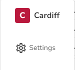
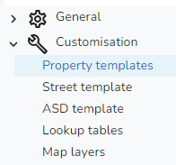

Administrator functions |
Top Previous Next |
|
To access the iManage Cloud Administrator functions click on the icon with your initials at the bottom left of the page and, as well as the option to Log off, you will also see the Administrator functions e.g.  At the top you will see the name of the Authority taken from the DETR code selected in the Authority details. SettingsClicking Settings displays the different information that can be configured for iManage Cloud.  |